Visualización en Power Bi
Uso Power BI
Tras evaluar varias opciones, llegamos a la conclusión de que Power BI era la herramienta más adecuada para el proyecto. Esto se debió a varias razones clave:
- Facilidad de Conexión a Datos: Power BI permite una integración sencilla con bases de datos como MySQL, facilitando la extracción y visualización de grandes volúmenes de datos.
- Visualización Intuitiva: Ofrece una amplia variedad de opciones de visualización interactivas, lo que facilita la creación de dashboards atractivos y fáciles de interpretar para los usuarios finales.
- Transformación de Datos: Aunque la transformación de datos puede realizarse de forma más compleja que en otras herramientas, Power BI ofrece un entorno robusto para preparar los datos a través de Power Query, lo que permite personalizar las transformaciones según las necesidades del negocio junto a sus medidas DAX.
- Interactividad y Filtros: Una de las características más destacadas es la capacidad de aplicar filtros y segmentar los datos en tiempo real, lo que permite obtener insights específicos de manera instantánea.
- Escalabilidad: A medida que el volumen de datos crezca, Power BI es capaz de manejar grandes cantidades de información sin perder rendimiento, lo que es esencial para el monitoreo continuo en un entorno de producción.
En resumen, Power BI no solo ofrece un alto grado de personalización y facilidad de uso, sino que también es capaz de escalar y adaptarse a las necesidades específicas del proyecto a medida que evoluciona.

Obtencion de Datos
Inicialmente, para realizar pruebas, cargamos los datos mediante archivos .csv. Sin embargo, una vez que el servidor estuvo operativo y la estructura de los datos fue definida correctamente, pasamos a conectarnos directamente a la base de datos MySQL previamente configurada.
Para ello, fue necesario instalar un conector compatible con Windows:
- mysql-connector-net-9.2.0
Con la conexión establecida y los datos integrados en Power BI, comenzamos con las primeras comprobaciones y la definición de relaciones entre tablas.
Primeros Pasos
Una vez identificados los datos disponibles, procedimos a diseñar un Power BI optimizado para su uso futuro. Esta visualización destaca por su interfaz intuitiva y su formato tipo aplicación, con paneles interactivos que permiten aplicar filtros y métricas para una mejor interpretación de la información.
Uno de los principales desafíos fue la correcta relación entre las tablas, ya que Power BI no proporciona claves foráneas de manera automática. Para solucionar esto, fue necesario crear tablas maestras que permitieran establecer las relaciones adecuadas.
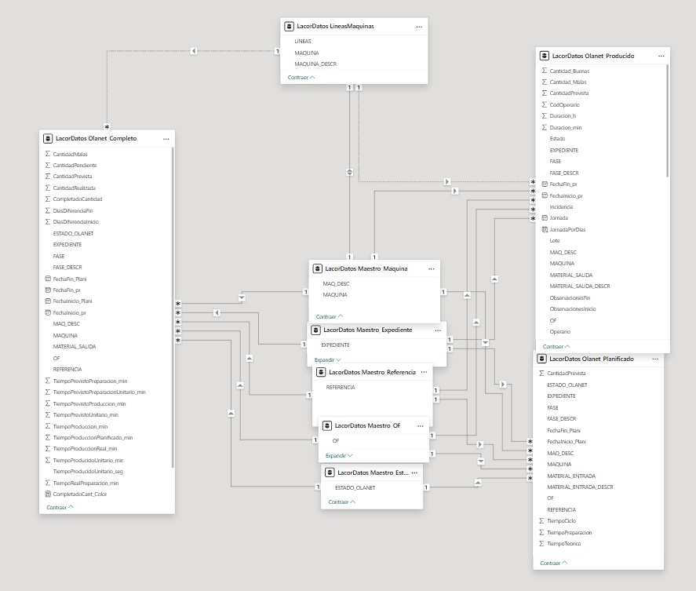
Tras estructurar y relacionar correctamente los datos, desarrollamos una visualización dinámica adaptada a las necesidades de la empresa. El objetivo principal era ofrecer una vista diferenciada de las fases Preparadas y los que estaban en Producción, permitiendo un mayor control sobre ambos procesos.
Para mejorar la preparación de los datos en R, creé varias tablas con diferentes cálculos, medidas y filtros, lo que amplió las posibilidades de visualización y análisis.
Visualización
Visualización Inicial
En las primeras fases del proyecto, se propuso una visualización tipo tabla que, si bien contenía toda la información necesaria, no resultaba adecuada para una interpretación rápida y eficaz de los datos de producción. La presentación era densa y poco intuitiva, lo que complicaba el análisis y la toma de decisiones tanto para el equipo técnico como para el de producción. Este enfoque inicial sirvió, sin embargo, para comprender mejor las necesidades específicas del equipo de calidad y producción, lo que permitió evolucionar hacia un modelo de visualización más dinámico, interactivo y orientado al usuario.
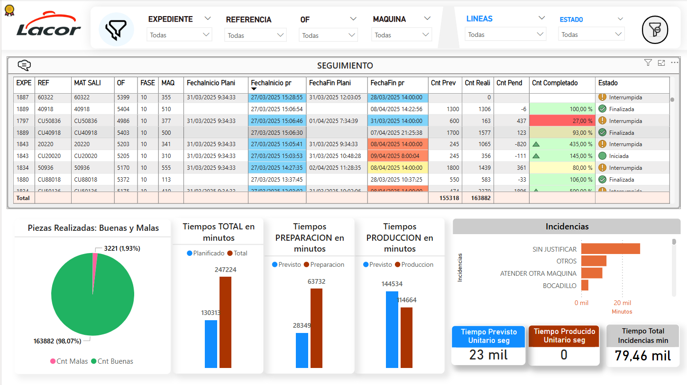
Visualizacion Final
Finalmente, tras llegar a un entendimiento con el equipo de producción, se planteó una nueva secuencia de visualización con un diseño más atractivo, similar a una aplicación. De esta forma, se pudieron detallar las distintas fases del proceso y detectar errores con mayor facilidad.
El dashboard final se organiza en cuatro apartados principales, diseñados para ofrecer un acceso rápido y una comprensión detallada del estado de la producción, los operarios y las incidencias. La navegación es intuitiva, con menús y opciones de filtrado que permiten al usuario explorar la información en distintos niveles de profundidad, desde vistas generales hasta análisis específicos.
A continuación, se describe cada uno de los apartados:
Inicio
La sección de Inicio proporciona una visión global del desempeño de la empresa. Aquí se presenta un balance comparativo entre el año actual y el anterior, mostrando indicadores clave como el volumen de piezas buenas producidas. Este panel actúa como el punto de partida del dashboard, desde el cual los usuarios pueden navegar hacia los análisis más específicos mediante un menú lateral interactivo.
- Comparativa año actual vs año anterior.
- Resumen de producción anual.
- Acceso rápido a los módulos de análisis detallado.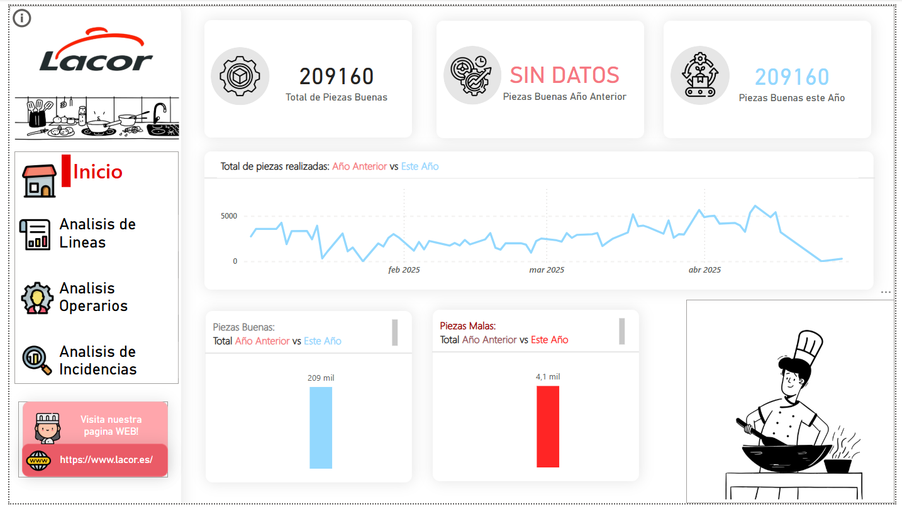
Análisis de Líneas:
En este apartado se ofrece una vista general del rendimiento de todas las líneas de producción. Cada línea es evaluada en tres aspectos fundamentales:
Calidad
> Fórmula:
> Calidad = Total de Piezas Buenas / Total de Piezas
Eficiencia
> Fórmula:
> Eficiencia = Tiempo de Producción / Tiempo Total
Productividad
> Fórmula:
> Productividad = (Tiempo Unitario Teórico × Total de Piezas Realizadas) / (Tiempo Unitario de Producción × Total de Piezas Realizadas)
Para facilitar la interpretación rápida de los resultados, se utilizan códigos de color:
- 🔴 Rojo: indicadores entre 0% y 20% .
- 🟠 Naranja: indicadores entre 20% y 40% .Opciones de Análisis: El usuario tiene la posibilidad de personalizar el rango temporal del análisis mediante diversos filtros dinámicos:
```
- Día actual: análisis centrado en la jornada de hoy.
- Último día trabajado: evaluación del día más reciente con actividad productiva.
- Rango de Jornadas: selección libre de un intervalo de fechas para análisis histórico o comparativo.
```Estos filtros permiten adaptar el análisis según las necesidades específicas del momento, ya sea en tiempo real o para estudios retrospectivos.
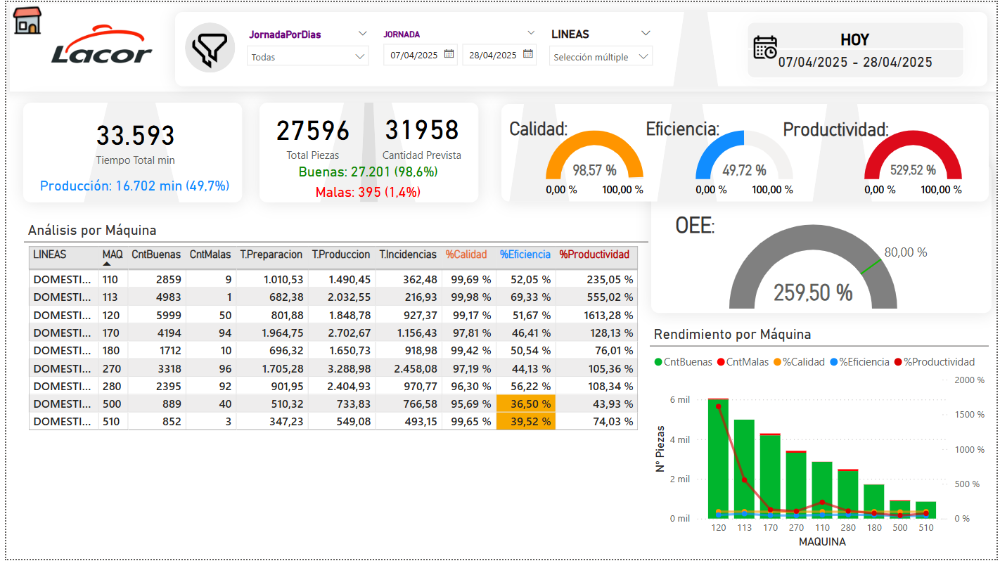
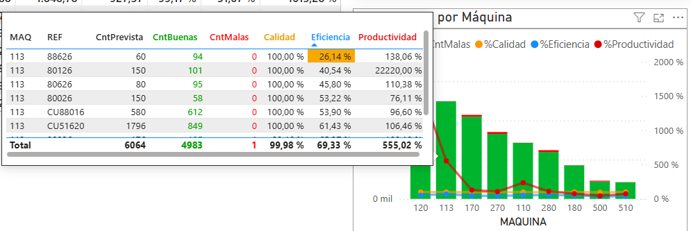
Exploración Detallada mediante Drillthrough: Una de las funcionalidades más potentes de este apartado es el uso del drillthrough. El drillthrough permite al usuario profundizar en el análisis de un elemento específico, en este caso, una máquina concreta perteneciente a una línea de producción.
¿Cómo funciona el Drillthrough?
Identificación: El usuario, tras identificar una línea de producción con indicadores preocupantes o interesantes, puede examinar la lista de máquinas asociadas.
Selección: A través de un click derecho sobre la máquina de interés, se despliega un menú contextual.
Acceso: Seleccionando la opción de “Drillthrough”, el usuario es redirigido automáticamente al módulo “Máquinas”.
Análisis detallado: En la página “Máquinas”, se presenta un desglose pormenorizado del desempeño de esa máquina específica, incluyendo:
- Tiempos de producción y tiempos de parada.
- Referencias trabajadas.
- Número de piezas buenas y piezas malas
- Incidencias registradas.
- Cálculo de OEE de la máquina.Esta funcionalidad transforma el análisis de un nivel macro (línea) a un nivel micro (máquina individual), permitiendo un enfoque de diagnóstico más ágil y efectivo.
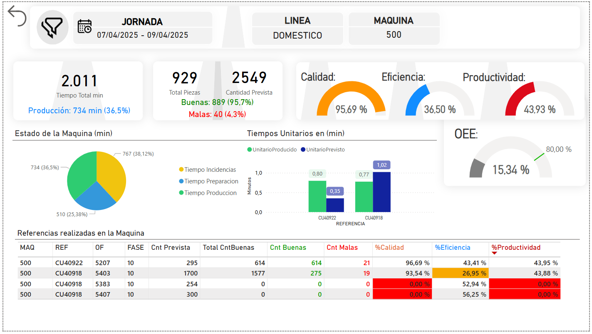
Además, desde la vista detallada de máquinas, se puede realizar un segundo drillthrough hacia el análisis por referencia, donde se profundiza aún más para identificar:
- Qué referencias específicas provocaron problemas.
- Qué tipo de incidencias se registraron.
- Qué operarios intervinieron en cada proceso.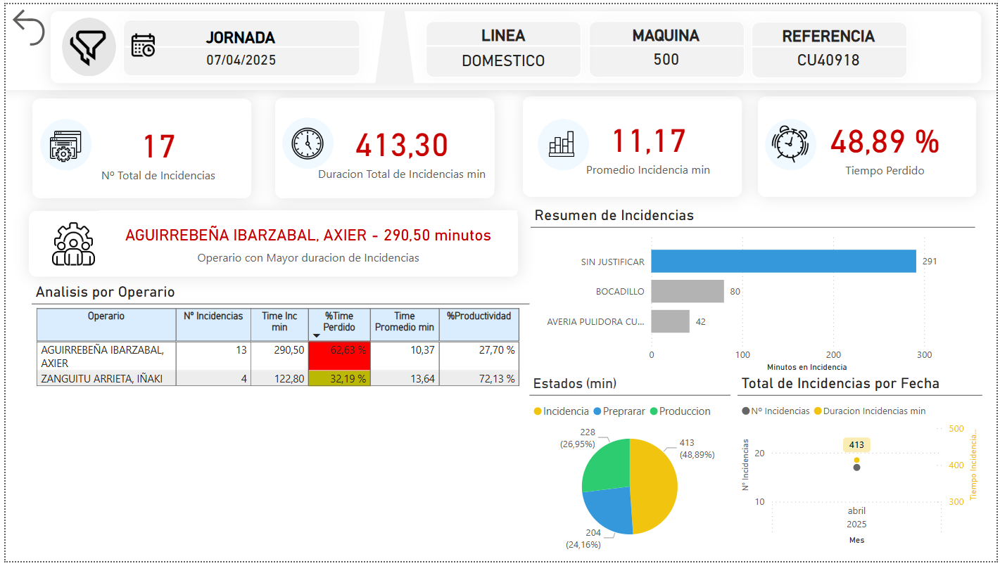
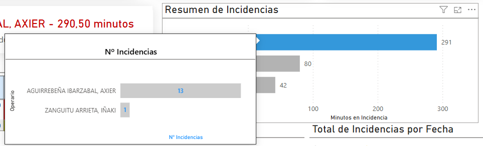
Esta navegación en cascada facilita el seguimiento y resolución de problemas desde el nivel más general hasta el más específico.
Análisis de Operarios:
Esta sección proporciona una visión integral del desempeño de los operarios en el proceso productivo. Se presentan métricas consolidadas de todos los trabajadores, permitiendo detectar rápidamente diferencias de desempeño entre ellos.
El usuario puede seleccionar un operario específico y, a través de un click derecho, acceder a la página “DetallesOperario”, donde se ofrece un desglose detallado de su actividad en la fecha o rango seleccionado:
- Máquinas en las que ha trabajado.
- Referencias realizadas.
- Número de piezas buenas y malas
- Incidencias asociadas.
- Tiempos de producción y preparación.
- Cálculo de su OEE Este análisis facilita identificar operarios que requieren apoyo o formación adicional, así como destacar aquellos de mejor rendimiento.
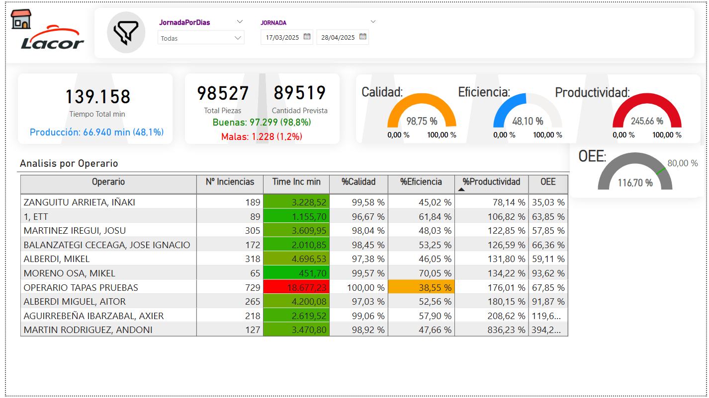
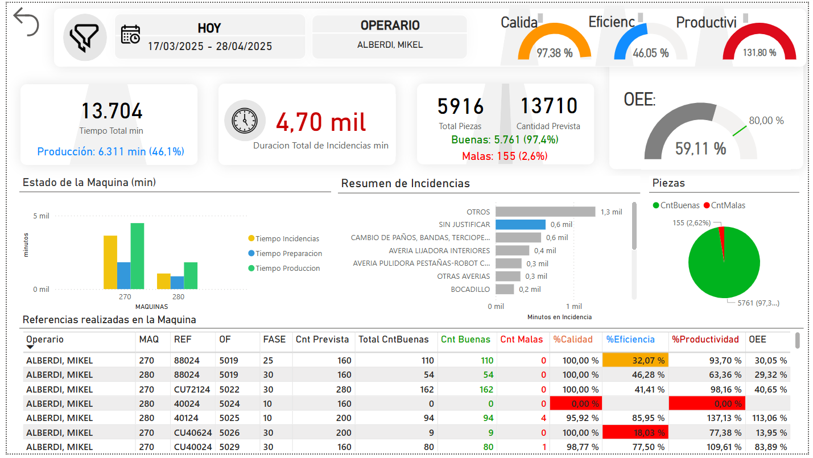
Análisis de Incidencias:
El último apartado se centra en el análisis detallado de las incidencias registradas durante la producción. Esta sección está diseñada para detectar patrones recurrentes de fallos en máquinas, líneas, turnos o referencias específicas.
El usuario puede aplicar filtros dinámicos para:
- Seleccionar por jornada o intervalo de fechas.
- Filtrar por turno de trabajo.
- Analizar incidencias por línea o por máquina.Para cada incidencia, se detallan:
- Tipo de incidencia ocurrida.
- Tiempo perdido asociado.
- Operario responsable.Este enfoque permite no solo corregir errores puntuales, sino también implementar acciones de mejora continua basadas en datos históricos y tendencias.
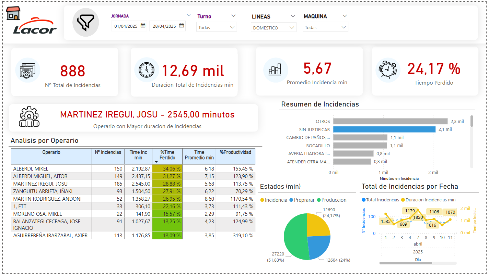